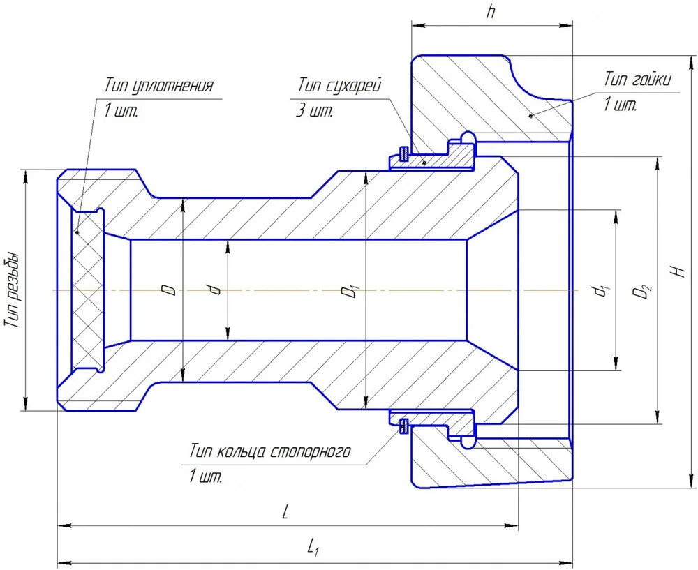
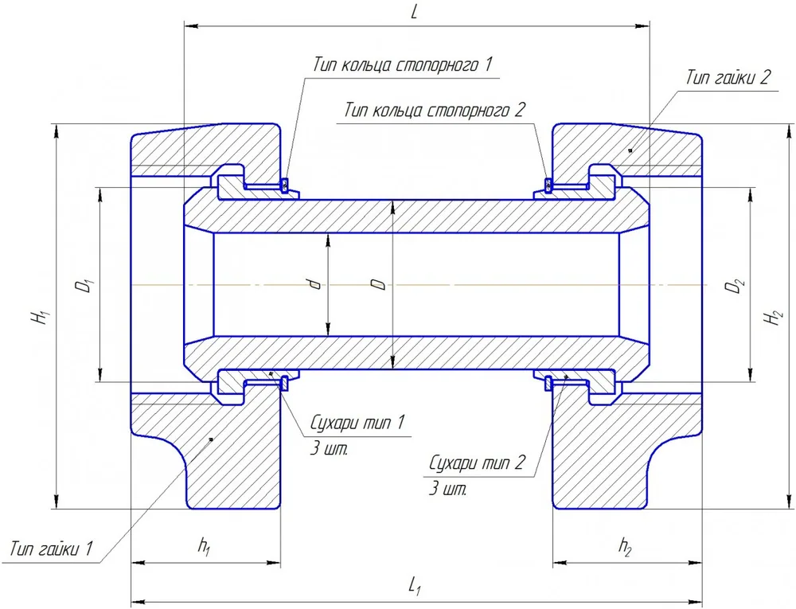
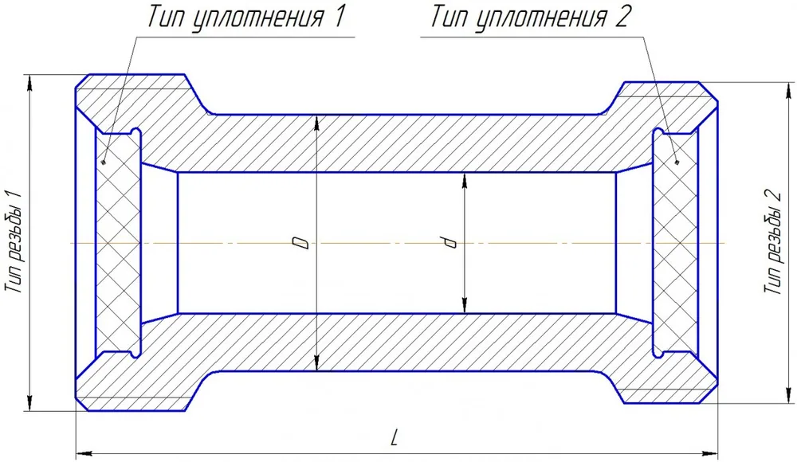

Соединительная и запорная арматура
Переходники
Переходники предназначены для соединения трубопроводов и оборудования различных типоразмеров. Изготавливаются из высокопрочных материалов по индивидуальным размерам заказчика. Представлены переходники типов Р-Г, Г-Г и Р-Р.
Типы переходников
Переходники типа Р-Г
| Параметры | ПереходникГРП 00.036 | ПереходникГРП 00.046 | ПереходникГРП 00.047 | ПереходникГРП 00.048 | ПереходникГРП 00.049 | ПереходникГРП 00.050 | ПереходникГРП 00.051 | ПереходникГРП 00.052 | ПереходникГРП 00.053 |
|---|---|---|---|---|---|---|---|---|---|
| Наружный диаметр D (мм) | 80 | 80 | 112 | 112 | 112 | 80 | 80 | 80 | 80 |
| Наружный диаметр D1 (мм) | 104 | 104 | 104 | 72 | 72 | 72 | 72 | 72 | 74 |
| Диаметр проходного отверстия d (мм) | 44 | 44 | 77 | 44 | 44 | 44 | 44 | 44 | 42 |
| Диаметр переходной фаски d1 (мм) | 70 | 70 | 77 | 44 | 44 | 44 | 44 | 44 | 42 |
| Тип гайки | Гайка 3" WECO 15025,375-3,5 ACME-3G | Гайка 3" WECO 15025,375-3,5 ACME-3G | Гайка 3" WECO 15025,375-3,5 ACME-3G | Гайка 2" WECO 15024,125-3 ACME-3G | Гайка 2" WECO 15024,125-3 ACME-3G | Гайка 2" WECO 15024,125-3 ACME-3G | Гайка 2" WECO 15024,125-3 ACME-3G | Гайка 2" WECO 15024,125-3 ACME-3G | Гайка 2" WECO 15024,125-3 ACME-3G |
| Ширина гайки h (мм) | 70 | 70 | 70 | 63,5 | 63,5 | 63,5 | 63,5 | 63,5 | 63,5 |
| Высота гайки H (мм) | 200 | 200 | 200 | 163,25 | 163,25 | 163,25 | 163,25 | 163,25 | 163,25 |
| Тип кольца стопорного | Кольцо стопорное 3" | Кольцо стопорное 3" | Кольцо стопорное 3" | Кольцо стопорное 2" | Кольцо стопорное 2" | Кольцо стопорное 2" | Кольцо стопорное 2" | Кольцо стопорное 2" | Кольцо стопорное 2" |
| Тип сухарей | Сухари на 3" | Сухари на 3" | Сухари на 3" | Сухари на 2" | Сухари на 2" | Сухари на 2" | Сухари на 2" | Сухари на 2" | Сухари на 2" |
| Внешний диаметр ниппеля D2 (мм) | 116,2 | 116,2 | 116,2 | 82,5 | 82,5 | 82,5 | 82,5 | 82,5 | 82,5 |
| Тип резьбы | 4,125-3 ACME-3G | Сп. Tr100х12,7 | 5,375-3,5 ACME-3G | 5,375-3,5 ACME-3G | 5,375-3,5 ACME-3G | 4,125-3 ACME-3G | Сп. Tr100х12,7 | Сп. Tr100х12,7 | 4,125-3 ACME-3G |
| Тип уплотнения | Уплотнение торцевое 2" | Уплотнение торцевое 2" | Уплотнение торцевое 3" | Уплотнение торцевое 3" | Уплотнение торцевое 3" | Уплотнение торцевое 2" | Уплотнение торцевое 2" | Уплотнение торцевое 2" | Уплотнение торцевое 2" |
| Длина патрубка L (мм) | 200 | 200 | 200 | 200 | 200 | 220 | 200 | 200 | 200 |
| Общая длина переходника L1 (мм) | 224 | 224 | 224 | 221,2 | 221,2 | 221,2 | 221,2 | 221,2 | 221,2 |
Переходники типа Г-Г
| Параметры | ПереходникГРП 00.042 | ПереходникГРП 00.043 | ПереходникГРП 00.031 | ПереходникГРП 00.044 | ПереходникГРП 00.045 |
|---|---|---|---|---|---|
| Наружный диаметр D (мм) | 72 | 72 | 72 | 72 | 72 |
| Диаметр проходного отверстия d (мм) | 44 | 44 | 44 | 44 | 44 |
| Тип гайки 1 | Гайка 2" WECO 15024,125-3 ACME-3G | Гайка 2"Сп. Tr100х12,7 | Гайка 2"Сп. Tr100х12,7 | Гайка 3" WECO 15025,375-3,5 ACME-3G | Гайка 3" WECO 15025,375-3,5 ACME-3G |
| Тип гайки 2 | Гайка 2" WECO 15024,125-3 ACME-3G | Гайка 2"Сп. Tr100х12,7 | Гайка 2" WECO 15024,125-3 ACME-3G | Гайка 2" WECO 15024,125-3 ACME-3G | Гайка 2"Сп. Tr100х12,7 |
| Ширина гайки h1 (мм) | 63,5 | 63,5 | 63,5 | 70 | 70 |
| Ширина гайки h2 (мм) | 63,5 | 63,5 | 63,5 | 63,5 | 63,5 |
| Высота гайки H1 (мм) | 163,25 | 163,25 | 163,25 | 200 | 200 |
| Высота гайки H2 (мм) | 163,25 | 163,25 | 163,25 | 163,25 | 163,25 |
| Тип кольца стопорного 1 | Кольцо стопорное 2" | Кольцо стопорное 2" | Кольцо стопорное 2" | Кольцо стопорное 3" | Кольцо стопорное 3" |
| Тип кольца стопорного 2 | Кольцо стопорное 2" | Кольцо стопорное 2" | Кольцо стопорное 2" | Кольцо стопорное 2" | Кольцо стопорное 2" |
| Сухари тип 1 | Сухари на 2" | Сухари на 2" | Сухари на 2" | Сухари на 3" | Сухари на 3" |
| Сухари тип 2 | Сухари на 2" | Сухари на 2" | Сухари на 2" | Сухари на 2" | Сухари на 2" |
| Внешний диаметр ниппеля D1 (мм) | 82,5 | 82,5 | 82,5 | 116,2 | 116,2 |
| Внешний диаметр ниппеля D2 (мм) | 82,5 | 82,5 | 82,5 | 82,5 | 82,5 |
| Длина патрубка L (мм) | 200 | 200 | 200 | 200 | 200 |
| Общая длина L1 (мм) | 242,3 | 242,3 | 242,3 | 245,2 | 245,2 |
Переходники типа Р-Р
| Параметры | ПереходникГРП 00.033 | ПереходникГРП 00.037 | ПереходникГРП 00.038 | ПереходникГРП 00.039 | ПереходникГРП 00.040 | ПереходникГРП 00.041 | |||||||
|---|---|---|---|---|---|---|---|---|---|---|---|---|---|
| Наружный диаметр D (мм) | 80 | 80 | 80 | 80 | 80 | 112 | |||||||
| Диаметр проходного отверстия d (мм) | 44 | 44 | 44 | 44 | 44 | 77 | |||||||
| Тип резьбы 1 | 4,125-3 ACME-3G | 4,125-3 ACME-3G | Сп. Tr100х12,7 | 5,375-3,5 ACME-3G | 5,375-3,5 ACME-3G | 5,375-3,5 ACME-3G | |||||||
| Тип резьбы 2 | Сп. Tr100х12,7 | 4,125-3 ACME-3G | Сп. Tr100х12,7 | 4,125-3 ACME-3G | Сп. Tr100х12,7 | 5,375-3,5 ACME-3G | |||||||
| Тип уплотнения 1 | Уплотнение торцевое 2" | Уплотнение торцевое 2" | Уплотнение торцевое 2" | Уплотнение торцевое 3" | Уплотнение торцевое 3" | Уплотнение торцевое 3" | Тип уплотнения 2 | Уплотнение торцевое 2" | Уплотнение торцевое 2" | Уплотнение торцевое 2" | Уплотнение торцевое 2" | Уплотнение торцевое 2" | Уплотнение торцевое 3" |
| Общая длина L (мм) | 200 | 200 | 200 | 200 | 200 | 200 |
Схематическое изображение переходников

Переходник типа Р-Г (резьба-гайка)

Переходник типа Г-Г (гайка-гайка)

Переходник типа Р-Р (резьба-резьба)
* Нажмите на схему для увеличения
Не нашли нужную позицию?
Напишите нам — подберём аналог и согласуем характеристики.